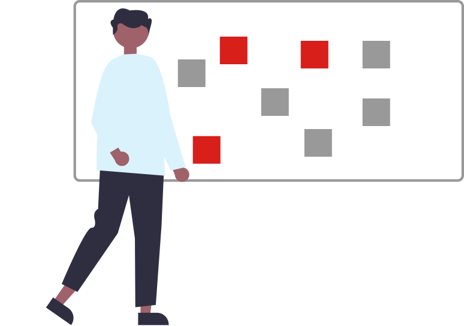

This Site: Semantic HTML & CSS
2021
I consume a lot of media about design commentary. Every week I receive nnGroup’s AlertBox newsletter, listen to a couple of podcasts, and read some articles, not to mention attending webinars. Before the pandemic, I was a regular attendee of the local Design System Meetup, and still attend online.
One recurring theme I noticed was warnings about not using overly themed, overly “off the shelf” portfolio designs. Usually the author would state it was all right to start from a template, but if you didn’t personalize it... well, what were you showing people about what you could do?
Not only did I completely agree with that, but I also have the challenge that the strict security I work under means I can’t show anything that I have actually worked on from work unless it has been made public (and since we are overwhelmingly B:B in our focus, none of it has been).
It was also important to me to write everything from scratch. Don’t get me wrong, I’ve used a lot of Bootstrap (often with React) at work, but it seemed to me that a Bootstrap site just proved I knew Bootstrap. I wanted to show how a site looked if I wrote it from scratch.
Besides, it sounded like fun.
Research
The first thing I did was look at a lot of people’s design portfolios, and at a lot of portfolio templates. I didn’t want to use any of the templates directly, just get ideas for how to organize and present the information. I also conducted a self-branding exercise with some trusted colleagues. We all did our own profiles and then critqued each other’s work.
I then outlined how I wanted the portfolio to look and how I wanted to approach the work.

The User’s Needs & Pain Points
In the past twelve months, I’ve been involved with hiring two additional UX designers, reviewing resumes and portfolios, and conducting first-round interviews with another team member. I was grateful to see so many different approaches to constructing a portfolio, and to gather data points for what I wanted to show in my own portfolio:
- accessibility as part of the foundation, not an afterthought
- minimal shortcuts & other people’s work: style kits like Bootstrap and template platforms like Wix are great for speeding up projects, but not for showing what you know
- product attitude: this is a product like any other I’ve worked on, and has gone through iterations like anything else I’ve done in a team setting
- process and impact: ensure the process was both clearly stated, and clearly demonstrated
- include a team: since on a real project I would be working with a team and receiving/incorporating feedback, I created a team of “stakeholders” from a group of peers — we critique and help each other regularly.
Design with Constraints
For my portfolio, I wanted:
- HTML with a clear structure, both to make it easy to meet WCAG standards and to make it easy to update and maintain
- CSS that was easy to maintain and apply (with no surprises)
- reasonably fast performance, because I’ve noticed that a lot of portfolios are so graphics-heavy they perform poorly
Ideation
The site you’re looking at now was inspired by three different portfolio templates. Instead of just blindly copying & pasting code, I wrote all the semantic HTML myself, using the templates as visual guides.
Key Design Decisions
Structure
- The CSS started with a copy of the classless mvp.css (external link) template, which was then expanded and updated to suit the content and theme. The advantage of using mvp.css as a foundation is that it strongly encourages the use of semantic HTML, that is, HTML whose tags largely indicate the purpose of each tag set (as opposed to, say, just using <div> tags for each content block).
- Semantic HTML also makes it easier to meet WCAG accessibility standards, since that’s that WCAG includes in its standards.
- I decided to keep all the content in one long page, rather than having users flip back and forth between the main page and each case study. It does make for a long page, but the navigation lets users skip from section to section, and people who want to read all the content can simply scroll.
Look & feel
- The section, button, and link colours are all based on the entry page conceptual image (a photo I took at a Winter Stations festival).
- Margins, spacing, and letter/word spacing added whitespace without sacrificing readability.
Validate Solution
- reviewed each iteration with my “stakeholder” team
- checked on multiple devices for responsiveness
- tested all interactive parts on multiple devices
- checked against accessibility checkers

Reflections
Now that the main structure has been set up, I can focus on more (and more interactive) case studies. There are already two in the works.


{kind=link}
{kind=link}
{kind=link}